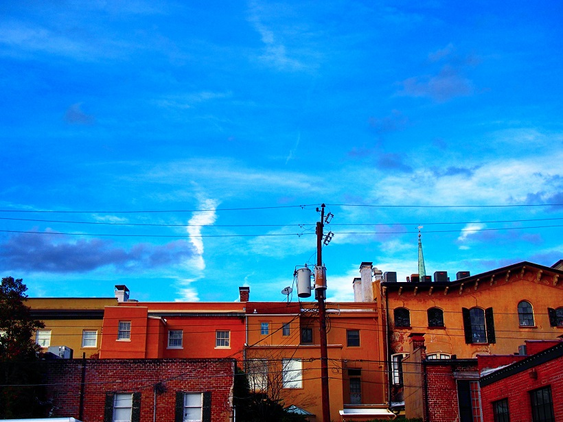

Hi! I am Ben Lucas!
This is my awesome girlfriend and I! She is my adventure partner, brewing buddy, jerky making mate, and much more! Mostly we are just goobers.
Over the years I have had many hobbies. I have brewed beer in a plethora of forms and made Jerky. I enjoy hiking, camping, and photography.
Beers
These are beers we brewed and labeled for a Guerrilla Cuisine dinner years ago. (left to right: English Bitter,English Brown, Honey Suckle Golden Ale, Rauchbier, Sweet Tea Red Ale, and a Peacan Pie Stout)
These are beers we made for a Robert Lange Studios Anniversary Party (left to right: Hoppy Rye Brown, Tangerine Mead, Cucumber Pilsner, Chocolate Orange IPA, and a Sezchuan Pepper Stout

The link at the top of the page will take you a page a friend of mine has maintained for awhile that gives you updates on whats going on with locally brewed beer in Charleston
Hiking
These pictures were taken while hiking in Georgia, Maryland, and South Carolina:
Making Jerky
A few years back I started a jerky contest(first picture) at Elliotborough Minibar called The Jerky Off. Every years we have 30 or so different types of jerky all handmade by chefs and residents of Charleston. I like making smoked habanero teryaki beef jerky as well as soy, ginger, garlic beef jerky! Here are a few pictures:
Yes the last picture is bacon I cured myself then dehydrated to make bacon jerky.
Photography
Finally these are some pictures from my Instagram account. To see more click the link at the top of the page.
